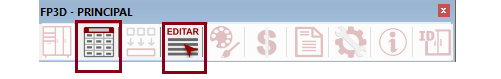

PRIMEIRO ACESSO
Entrando no PLUGIN-FP3D
Para fazer login no plugin, vai precisar primeiro fazer download do instalador, na sequencia após download, instalar para que ele seja exibido no SKETCHUP.
Abra seu SKETCHUP e o plugin aparecerá na tela, ai basta você inserir seus dados de acesso, login, senha e chave empresa.
Compatibilidade com versão 2018 ou superior!!
Link para download do plug-in :
PLUGIN FP3D
Apresentação das barras de Ferramentas
Nesse vídeo vamos apresenta a barra de ferramentas do plugin, e algumas dicas de desempenho do software sketchup.

PLUGIN FP3D - Login
Barra de Ferramenta - Login
A barra de ferramenta FP3D-LOGIN , será exibida após fazer a instalação do plugin, essa barra de ferramentas sempre ficará disponível logado ou não no plugin.

Descrições dos menus
- Construtor de paredes ou geometrias
- Move objetos em todos os eixos
- Rotaciona objetos em todos os eixos
- Exibe objetos ocultos
- Torna visível o objeto oculto selecionado
- Torna o todos os objetos ocultos visíveis
- Cria cópia do objeto selecionado e torna único
- Torna a cópia de um objeto em único
PLUGIN FP3D - Atalhos
Barra de Ferramenta - Atalhos
A barra de ferramenta FP3D-Atalhos Tema função de facilitar a visualização nas elevações, opção de visualização em Perspectiva/Projeção Paralela e, descolar o módulo da parede para poder move-lo pra frente.

Descrições dos menus
- Vista em Perspectiva/Projeção Paralela
- Visualização Isometrica
- Visualização Superior
- Visualização Frontal
- Visualização Direita
- Visualização Posterior
- Visualização Esquerda
- Descolar
PLUGIN FP3D - Camadas
Barra de Ferramenta - Camadas
A barra de ferramenta FP3D-Camadas Vem com as opções de exibir/ocultar as frentes externas, frentes internas, ferragens, tamponamentos, divisor de espaços e id, assim será possível ocultar os objetos relacionados.

Descrições dos menus
- Ocultar/Exibir Frentes Externas
- Ocultar/Exibir Frentes Internas
- Oculta/Exibe Ferragens e Acessórios
- Oculta/Exibe Tamponamento/Fechamento
- Oculta/Exibi Divisor de Espaço
- Oculta/Exibe ID gerado dos Módulos
PLUGIN FP3D - Principal
Barra de Ferramenta - Principal
A barra de ferramenta FP3D-Principal, se encontra as principais ferramentas que iremos trabalhar, por isso os vídeos serão fracionados, pois são muitas as funcionalidades relacionados a cada menu, nesse vídeo deixamos uma breve apresentação das funcionalidades de cada menu da barra de ferramentas.

Descrições dos menus
- Módulos
- Propriedades
- Compentes
- Selecionar Componentes/Editar
- Texturas
- Orçamentos
- Relatórios
- Configurador
- Informações
- ID Módulos
Módulos
Na barra de ferramenta menu Módulos, fica disponível todos os tipos de modulação da plataforma e também os customizado caso tenha em sua base.
Não se prenda a engenharia presente na plataforma, pois durante a implantação, faremos os ajustes necessários para deixar o mais próximo ao perfil de sua empresa.
Atenção para ao clicar a primeira vez nos módulos, tem que aguardar o download ser concluido, após o processo de download, o módulo ficará disponível em seu computador.
Descrições dos menus
- Módulos
- Propriedades
Componentes
É na tela de COMPONENTES, que interagimos com a modulação da biblioteca, como por exemplo: Troca de portas e frentes, tamponamento, puxadores, construímos armários, inserimos sistema deslizante e muito mais, confira as funcionalidades.

Descrições dos menus
- Componentes
- Propriedades
Propriedades
Aqui temos dois menus de propriedades, um PROPRIEDADES e SELEÇÃO PROPRIEDADES, o menu PROPRIEDADES funciona aplicando o valor desejado, percorrendo todo o módulo e aplicando o valor em todo os componentes que disponibiliza a função.
Já a SELEÇÃO PROPRIEDADES, aplica o valor desejado apenas no componente selecionado, não percorre a modulação.
Descrições dos menus
- Propriedades
- Selecionar Componentes/Editar
Texturas
Com a tela de textura podemos aplicar materiais nos módulos/componentes, como cor de MDF, VIDRO, PERFIL, FITAS DE BORDAS etc...
Também temos a opção de aplicar somente em um objeto selecionado de forma individual, como uma lateral, fundo, frente etc...
É também na tela de textura que rotacionamos os componentes, por isso no cadastro de textura temos que cadastrar textura HORIZONTAL e VERTICAL mesmo que não exista veio na madeira, pois ao trocar a opção de textura de horizontal para vertical, o posicionamento e medida da chapa são invertidos automaticamente.
OBS: Caso ao cadastrar a textura ela apresente emendas(marca de junção) na imagem, faça a tratativa no site a seguir: https://www.imgonline.com.ua/eng/make-seamless-texture.php

Descrições dos menus
- Texturas
Orçamentos
Ao acionar o menu orçamento, podemos tano consultar os orçamentos gerados, ou gerar novos orçamentos. Apenas temos que ter bastante atenção a mensagem exibida ao clicar nessa opção, pois ela pergunta se quer gerar apenas dos itens selecionados ou não, sugerimos sempre orçar todos os objetos, pois ao selecionar pode corre o risco de não selecionar tudo que deseja.
Faça seus orçamentos sem por ambientes separados, pois é possível continuar a gerar no mesmo número de pedido.

Descrições dos menus
- Orçamentos
Relatórios
Para gerar os relatórios de insumo como mdf, vidro, ferragens acessórios etc... Tem que ter gerado primeiro o ORÇAMENTO, pois vai precisar do números do pedido, para fazer a busca.

Descrições dos menus
- Relatórios
Configurador
É no menu configurador, que criamos todas as definições da biblioteca, como espessuras, estilos de montagens, definições de padrão de ferragens de medidas e muito mais... O configurado está separado por TELAS DO MENU, como MÓDULOS, COMPONENTES e GERAL, em seguida vem grupos e classes, isso para módulos e componente, segue exemplo:
CONFIGURADOR> MÓDULOS > GRUPO(inferiores para Bancada) > CLASSE (Lineares).
CONFIGURADOR> COMPONETES > GRUPO(Portas e Frentes) > CLASSE (Ext.MDF)
CONFIGURADOR> GERAL
Ao ajustar essas configurações os módulos já baixado, são excluídos automaticamente para que possa ser baixado novamente com as novas configurações.
O configurador possibilita um modelo para empresa aplicando a todos os usuários e, cada usuário pode cria o seu independente, basta selecionar no configurador a opção empresa ou usuário, assim terá dois padrões de biblioteca em seu computador
Descrições dos menus
- Configurador
Informações/ID
A tela do menu Informações, mostra as informações dos itens selecionados, ela sempre abre acompanhada da ferramenta COMPONENTES e SELECIONAR PROPRIEDADES.
A Tela ID, serve para gerar os identificadores nos módulos selecionados, serve para controle de produção, pois esse mesmo número acompanha todas as composições do módulo, é o numero raiz dele, e nunca se repete.

Descrições dos menus
- Informações
- ID
PLUGIN FP3D-Otimizador
Plugins Otimizador
Nesse bloco está sendo apresentado as informações de configurações do otimizador para plano de corte, está sendo demonstrado com Corte-Certo e MaxCut

Descrições dos menus